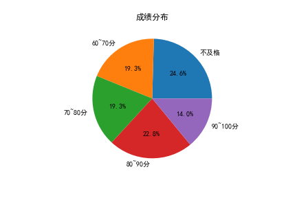
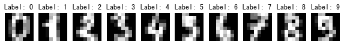

特别注意：1.考试结束后不要关机；2.操作题结果必须保存在c:\ecnu_ks\root\中，否则没有分数。
一. 选择题（每小题2分，20题 共40分）
登录后完成20道选择题。
二. 程序填空（每空2分，每题5空， 共2题，20分）
#fillblank_1.py
#给定代码不准删除修改，所有填空使用一个表达式完成。
import numpy as np
np.random.seed(6) ##设定随机种子，不要改动！
#生成成绩：随机整数，范围在[40,100)之间，50行3列的二维数组，每行数据依次为某同学的语文、数学、英语这三门课的成绩
scores=______【1】______
#请输入一个筛选分数：
score=int(input("请输入分数："))
#统计输入分数以下的成绩信息：
mask=(scores<score)
#分别统计语文、数学、英语三门课在筛选分数段以下的人数
print("语文、数学、英语三门课在{}分以下的人数分别为：".format(score), ______【2】______)
#统计三门课都在筛选分数以上的人数
print("三门课都在{}分以上的人数为：".format(score), ______【3】______)
#输出三门课的平均分
print("三门课的平均分分别为：", ______【4】______)
#输出三门课平均分在筛选分数以上的人数
print("三门课平均分在{}分以上的人数为：".format(score), ______【5】______)
|
请输入分数：80 语文、数学、英语三门课在80分以下的人数分别为： [36 33 36] 三门课都在80分以上的人数为： 2 三门课的平均分分别为： [65.2 66.76 67.48] 三门课平均分在80分以上的人数为： 8 |
# fillblank_2.py
# 导入库
import matplotlib.pyplot as plt
from ________【1】________ import KMeans # 导入聚类库
import pandas as pd
import numpy as np
plt.rcParams['font.sans-serif'] = ['SimHei']
plt.rcParams['axes.unicode_minus'] = False
# 加载数据集并提取数据
data_ori = ________【2】________ # 读取housing.csv数据
data = ________【3】________ # 提取聚类需要使用的三列元素
# 从键盘输入聚类数
n = int(input("请输入聚类数：\n"))
# 聚类训练
res = KMeans(________【4】________, random_state = 1) # 设置聚类数为n
res.fit(data)
# 展示结果
labels = res.labels_
centers = ________【5】________ # 获取所有质心的特征数据
print(centers)
|
请输入聚类数： 6 [[-121.89079208 38.35447607 2.81425565] [-118.0273144 33.85772076 5.51798177] [-117.82903608 33.81916298 2.87353963] [-121.96796356 37.70932119 5.5028353 ] [-119.34864629 35.00810044 10.95214323] [-119.72682115 36.10424242 2.66961087]] |
三. 程序编写（每题20分，共2题，共40分）
>>> 输入一个总成绩：200 比这个总成绩高的人数有23位。 
|

>>> 请输入随机数编号： 42 精确率: 0.9783 混淆矩阵: [[53 0 0 0 0 0 0 0 0 0] [ 0 50 0 0 0 0 0 0 0 0] [ 0 0 47 0 0 0 0 0 0 0] [ 0 0 1 53 0 0 0 0 0 0] [ 0 0 0 0 60 0 0 0 0 0] [ 0 0 0 0 0 64 1 0 0 1] [ 0 0 0 0 0 0 53 0 0 0] [ 0 0 0 0 0 1 0 53 0 1] [ 0 0 0 1 0 0 0 0 42 0] [ 0 0 0 2 1 1 1 0 1 53]]
|
注意：考试结束后千万不要关机！